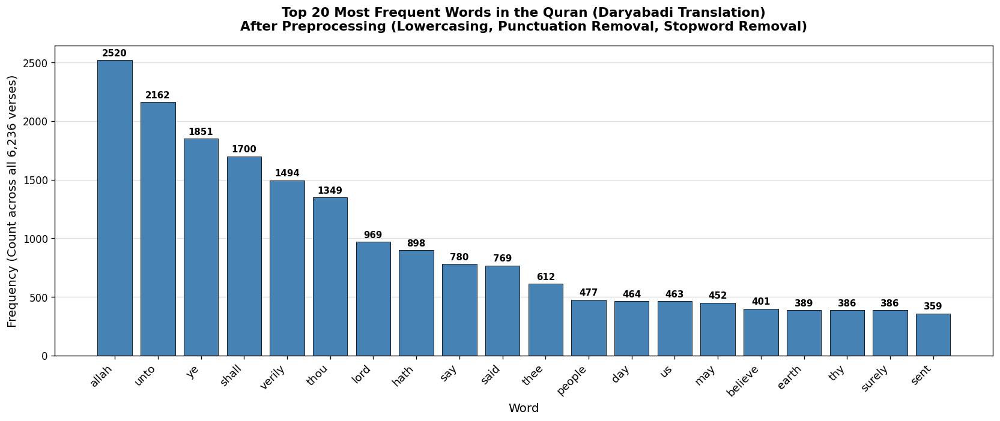

NB01 — Text Preprocessing and Bag-of-Words¶
Open in GitHub Concepts: Text Preprocessing
Historical Context¶
To appreciate where NLP is today, it helps to understand where it came from.
The Rule-Based Era (1950s–1980s): Early NLP was entirely hand-crafted. Linguists wrote explicit grammar rules. Systems like ELIZA (1966) mimicked conversation through pattern matching but had no real language understanding.
The Statistical Revolution (1990s): Researchers discovered statistical models trained on large corpora outperformed hand-crafted rules. The Bag-of-Words model was the backbone of early search engines and text classifiers from the mid-1990s through the mid-2010s — about two decades of dominance.
What is Natural Language Processing?¶
NLP is a subfield of AI concerned with enabling computers to understand, generate, and transform human language. It sits at the intersection of linguistics, computer science, and machine learning.
Language is hard for machines because of:
- Ambiguity — "bank" means a river bank or a financial institution
- Context dependence — "It's cold" means different things in different situations
- Language variation — dialects, slang, sarcasm, domain-specific jargon
- World knowledge — understanding implicit references requires knowing things about the world
- Morphological complexity — "run", "runs", "running", "ran" are all the same concept
The Preprocessing Pipeline¶
Before any NLP algorithm can run, raw text must be cleaned. The standard 5-step pipeline:
Raw Text
|
v
[ Lowercasing ] "Allah is Merciful" → "allah is merciful"
|
v
[ Punctuation Removal ] "merciful," → "merciful"
|
v
[ Tokenization ] "allah is merciful" → ['allah', 'is', 'merciful']
|
v
[ Stopword Removal ] ['allah', 'is', 'merciful'] → ['allah', 'merciful']
|
v
[ Stemming ] ['allah', 'merciful'] → ['allah', 'merci']
|
v
Processed Tokens
Why each step matters¶
Lowercasing — Without it, "God", "god", and "GOD" are three separate vocabulary items.
Punctuation Removal — "merciful" and "merciful," must be the same token.
Tokenization — We use NLTK's word_tokenize which handles contractions and edge cases better than simple whitespace splitting.
Stopword Removal — Words like "the", "is", "of", "and" appear in almost every document and carry zero discriminative power. The NLTK English stopword list has ~179 words.
The Negation Trap
The word "not" is on the standard stopword list. This means:
| Input | After stopword removal |
|---|---|
| "this is not bad" | "bad" |
| "this is not good" | "good" |
Both map to nearly identical tokens despite opposite meaning. For tasks where negation matters, keep "not" or move beyond BoW.
Stemming — Porter Stemmer reduces "merciful", "mercy", "mercifully" to the same stem "merci". Enables matching across word forms.
Bag-of-Words: Theory¶
The Bag-of-Words model represents each document as a vector of word counts, ignoring grammar and word order.
Step 1: Build vocabulary
Doc 1: "allah is merciful allah is kind"
Doc 2: "allah guides the believers"
Doc 3: "believers seek allah"
Vocabulary: {allah, merciful, kind, guides, believers, seek}
Step 2: Create document-term matrix
Step 3: Use the vectors
Now we can compute similarity between documents using cosine similarity.
Sparsity¶
In a real corpus with 10,000 vocabulary words, a typical 50-word document has 9,950 zero values — the vector is 99.5% zeros. This sparsity is a computational challenge and a modeling problem (distances become less meaningful in high dimensions).
Why BoW was revolutionary¶
Despite its simplicity, BoW enabled: - Document classification (spam vs not spam) with SVM or Naive Bayes - Information retrieval — matching documents to queries - Topic modeling (LDA) - Sentiment analysis at scale
It dominated NLP from the mid-1990s through the mid-2010s.
BoW vs what comes next¶
Representation Captures Captures Captures Dense?
Word Freq? Context? Semantics?
Bag of Words Yes No No No
TF-IDF (NB02) Yes(wtd) No No No
N-Grams (NB03) Yes Partial No No
Word2Vec (NB04) No Yes(local) Yes Yes
FastText (NB05) No Yes Yes Yes
Sentence Emb (NB06) No Yes(global) Yes Yes
Cosine Similarity Search¶
Rather than exact keyword matching, we represent both query and documents as vectors and return the most similar documents.
- Value range: 0 to 1 (for non-negative count vectors)
- 1 = identical direction (same words in same proportions)
- 0 = no shared words at all
Why cosine rather than Euclidean distance? Cosine is length-normalized — a short verse and a long verse about the same topic will have a high cosine similarity even if their raw word counts differ greatly.
Output¶
Top 20 most frequent content words after preprocessing:

Limitations¶
This is the most important section — understanding what BoW cannot do motivates every technique in NB02 through NB09.
1. No Semantics "mercy" and "kindness" are as unrelated to BoW as "mercy" and "elephant". A search for "kindness" fails to find verses about "compassion".
2. No Context "Allah forgives the believers" and "The believers forgive Allah" produce identical BoW vectors.
3. Sparse High-Dimensional Vectors 99%+ zeros → memory waste, poor generalization, curse of dimensionality.
4. Exact Word Dependence Even with stemming, synonyms produce zero overlap.
5. Equal Weight to All Words A verse with "allah" 10 times scores highly for almost every query — TF-IDF (NB02) fixes this.
Reflection Questions¶
- Run a BoW search for "patience in hardship". Are results returned because of meaning or shared words?
- Remove "not" from the stopword list and re-run the "not bad" / "not good" demo. Does keeping "not" help BoW distinguish the two?
- Use exact keyword search for: mercy, merciful, mercies, compassion, compassionate, kindness. Which mercy-related verses are missed by each?
- The BoW matrix is ~99% zeros. Why does this make cosine similarity less reliable as vocabulary grows?
- We set
min_df=2inCountVectorizer. What are the arguments for and against this threshold?
Further Reading¶
- Manning, Raghavan & Schütze — Introduction to Information Retrieval (free online) — Chapter 6
- Bird, Klein & Loper — Natural Language Processing with Python (NLTK Book, free online)
- Jurafsky & Martin — Speech and Language Processing (3rd ed., free online) — Chapter 6
Next: NB02 — TF-IDF and Ranked Retrieval — fix the equal-weighting problem